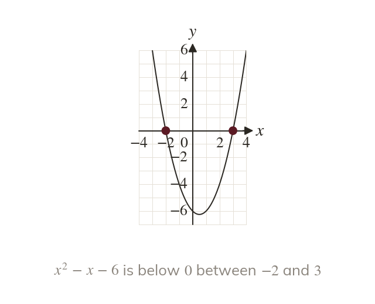
Below the axis means negative
A quadratic is negative wherever its graph lies below the x-axis. The critical values mark where it crosses.
A designer may need every width for which an area stays under a limit. That is where a quadratic is negative, and a sketch shows it at once.
Work down the page at your own pace. Write every answer in your book first, then click to check it.
Read each card, then follow the worked examples one step at a time.

A quadratic is negative wherever its graph lies below the x-axis. The critical values mark where it crosses.
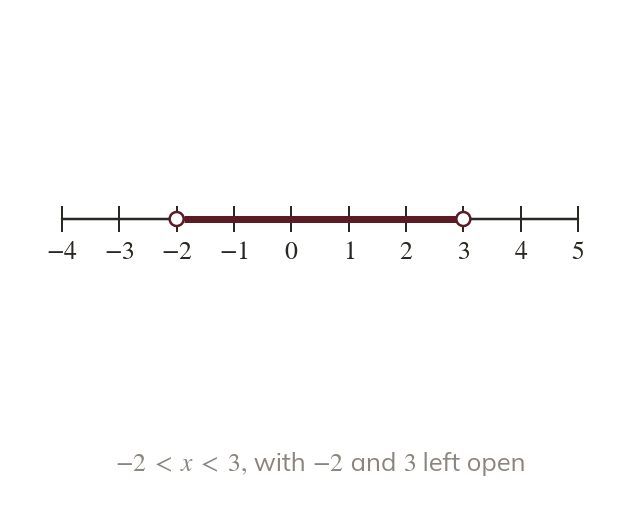
For a valley, < is the part between the roots. So gives
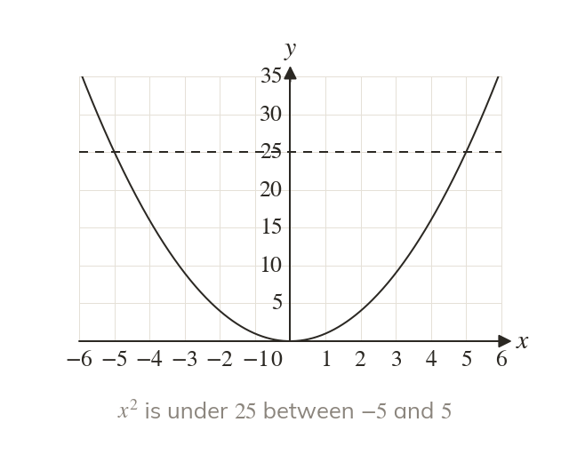
Solving needs both square roots. The answer is not just
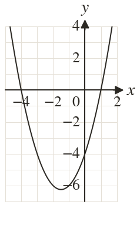
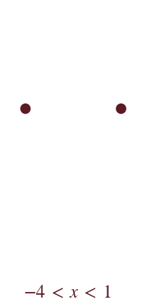
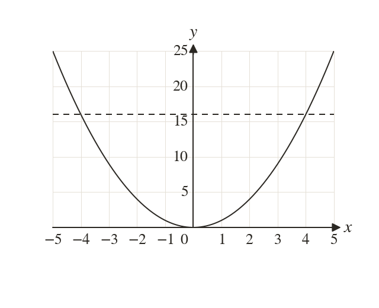
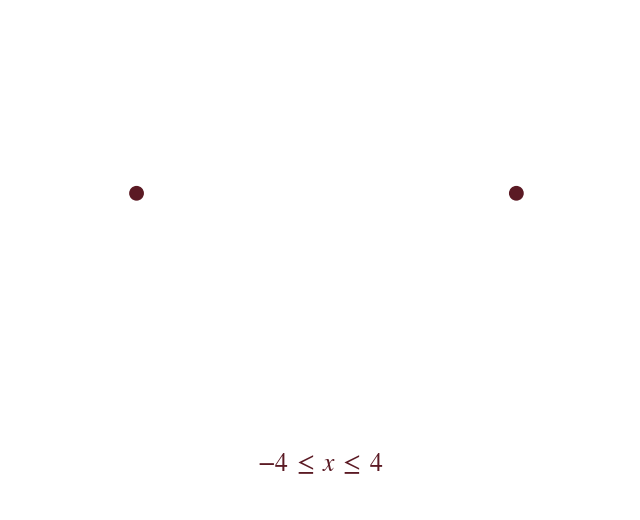
Pick an answer. If it's wrong, the feedback tells you which mistake it was.
Read each card, then follow the worked examples one step at a time.
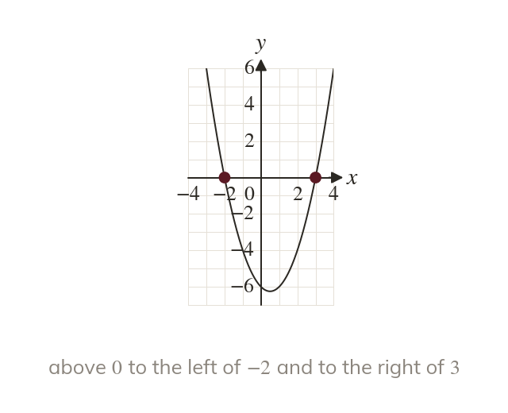
For a valley, > is the two parts outside the roots. The solution comes in two separate pieces.
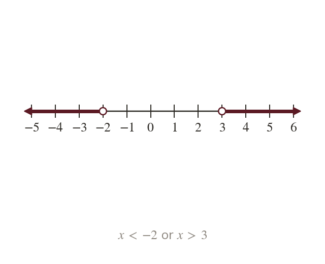
No number is both below and above
So the answer is or
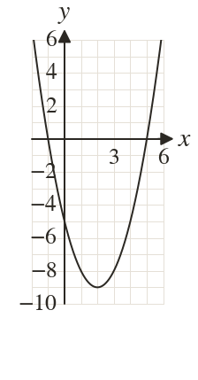
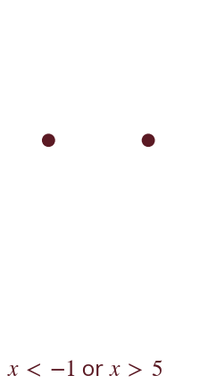
Pick an answer. If it's wrong, the feedback tells you which mistake it was.
Finished? Next lesson: 10H.15.6 Solving Quadratic Inequalities by Rearranging.
Log in, then search for a code to practise that skill.
Videos, worksheets and more on each part of this lesson.